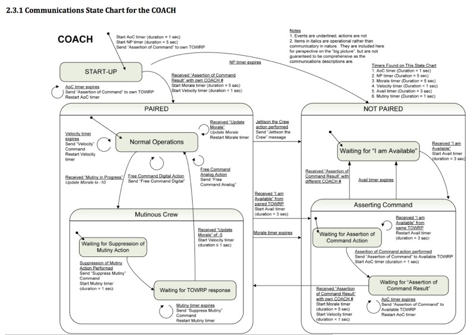

COACH Master
Files:
COACH State Diagram:

Pseudo-Code
TRANSMIT TABLE:
jump to correct entry in table
return start delimiter
return lenght MSB
return length LSB
return transmit API
return frameID
return boat identifier (AF)
return transmit ID (variable)
return options
return transmit opcode (variable)
return transmit parameter (variable)
return transmit checksum (variable)
RECEIVE TABLE:
jump to correct entry in table
for each byte, first empty byte box into w
for bytes 1-4
for each byte, compare equality with what it should be if it is a fixed value
if equal,
simply return
if not equal,
set the discard message flag
return
for bytes 5
save w into source MSB
compare equality with what it should be if it is a fixed value
if equal,
simply return
if not equal,
set the discard message flag
for byte 6
save w into sourceLSB (in case of assertion of command)
test if pairedID is equal to no controller
if yes, return
test if pairedID matches sourceLSB
if yes, return
if no, set set discard message flag, return
for bytes 7-10
save value in w into a variable for storage (checksum calculation and later access)
return
for byte 11
save value in w to compare with checksum result
calc checksum
start with 0
add required bytes together, ignoring overflow
check if the sum total 0xff
if it does, return
if it does not, set the discard message flag
return
INTERRUPTS PRIORITY:
Timer1
AD converter
Timer0
Transmit Asynch
Receive Asynch
Timer1 Interrupt:
clear flag
start AD conversion
AD converter Interrupt:
clear flag
load analog result into W
If AN0...
...velocity input.
save in velocity analog byte
change channel
return
If AN2...
...free analog input.
save in direction analog byte
change channel
return
If AN4...
... suppress mutiny input.
save in direction analog byte
change channel
return
If AN8...
...direction input.
save in direction analog byte
change channel
return
TRANSMIT INTERRUPT:
(this interrupt takes 10ms per packet!)
test if interrupt is enabled
return if transmit interrupts not enabled
move transmit counter to w
jump to table
write value in w from table to transmit register, also clears interrupt flag
increment transmit counter
move total bytes to w
compare equality with transmit counter
if not equal, end interrupt
if equal
set flag to indicate that packet transmit is completed
disable transmit timeout timer
disable transmit interrupt
end transmit service routine
TRANSMIT COMPILE:
(it takes 60us to assemble message in preparation for transmit)
test if ready to transmit new packet
if yes, assemble and send message
else return - don't transmit if not ready!
this is a controller, so only talk to boats - move to pairedMSB
move pairedID to pairedLSB - this is what allows different boats to pair with our controller!
test if transmit suppress mutiny flag is set
if no, skip ahead to next test
move suppress mutiny opcode in transmit opcode
move anything into transmit parameter
test if transmit assert command flag is set
if no, skip ahead to next test
move assert command opcode in transmit opcode
test PORTA to see which team color is selected
if equal to 0, save 0 to transmit parameter
else, equal to 1, save 1 to transmit parameter
test if transmit jettison crew flag is set
if no, skip ahead to next test
move jettison crew opcode in transmit opcode
move anything into transmit parameter
test if transmit velocity flag is set
if no, skip ahead to next test
move velocity opcode in transmit opcode
load velocity into w
move w into transmit parameter
test if transmit free digital flag is set
if no, skip ahead to next test
move free digital opcode in transmit opcode
move anything into transmit parameter
test if transmit free analog flag is set
if no, skip ahead to next test
move free analog opcode in transmit opcode
load free analog value into w
move w into transmit parameter
calculate checksum
start off with 0
add required bytes together, ignoring overflow
subtract sum of bytes from 0xff
store in tx_checksum
clear all transmit flags before transmit
set transmit counter to 0
clear transmit status flag to indicate that packet transmit is now in progress
enable transmit timeout timer
transmit interrupt enable - this starts send of message
return
RECEIVE INTERRUPT:
(takes 11ms to receive a packet)
test if discard message flag is set
if discard flag is set
start a new msg by clearing the counter and the discard message flag
read received value into w
save w in the bytebox
move recieve counter to w
jump to table
increment receive counter
test to see if packet is finished transmitting here!
move total bytes to w
compare equality with rc_counter
if not equal, end receive service routine
if equal, perform end of packet procedure
set receive counter to 0
test to see if discard message flag was set
if no, save the data that came in, then return
if yes, reset discard message flag for next round, return
SAVERCDATA:
clear opcodes because they're not always cleared elsewhere
empty received byte 9 into W
test if opcode received is MUTINY
if yes, set receive opcode flag, disregard paramter bit
test if opcode received is AVAILABLE
if yes, set receive opcode flag and save receive parameter as the new team color. also save to paired ID, because command was asserted.
test if opcode received is AOC RESULT
if yes, set receive opcode flag, disregard paramter bit
test if opcode received is UPDATE MORALE
if yes, set receive opcode flag and save receive parameter as the velocity
TIMER0 OVERFLOW:
updates the following timers: transmit timeout timer, shake timer, shake timeout timer, not paired timer, morale timer, mutiny timer, AOC timer, velocity timer, available timer, free analog timer
clear timer0 flag
repeat:
test if this timer is enabled, otherwise skip to next timer
if enabled
increment this timer
put this timer into w
XOR with number of overflows that corresponds to expired time interval
if equal, z bit is set, else it is clear
if clear, jump to next timer
if set,
reset transmit timeout timer
set transmit timeout timer expired flag!
end repeat
return
INIT:
Initialize Ports using TRIS and ANSEL
Initialize Asynchronous communication, set baud rate to 9600 Hz.
Init Analog Converter
Tc = (-10picofarad)*(1kiloohm + 7kiloohm + 0 kiloohm)*ln(1/2047) = 0.55 us
Tacq = 5us + 0.61 us + [(50degC - 25degC)*(.005us/degC)] = 5.735 us
clear analog interrupt flag
Initialize Timer0, using 1:256 prescaler
Initialize Timer1, using 1:1 prescaler
Initialize Interrupts: global, peripheral, timer0, timer1, async receive, analog interrupt
Clear and initialize all variables in memory
STARTUP:
Clear and start AOC timer
Clear and start not paired timer
Set state as startup
Send Assertion of Command - set flag
Update Displays
Enter Event Checker
STATEMACHINE:
EVENT CHECKER:
Test if in startup mode, if yes, goto that event checker
Test if paired, if yes, goto that event checker
Test if not paired, if yes, goto that event checker
Test if Mutinous crew, if yes, goto that event checker
Test if Waiting for Mutinous Crew Response, if yes, goto that event checker
Test if Asserting Command, if yes, goto that event checker
Test if Waiting for AoC response, if yes, goto that event checker
STARTUP EVENT CHECKER:
this is called only when the COACH first starts and then never again
check if assertion of command results has been received
go to event handler
check to see if AoC timer has expired
go to event handler
check to see if the NP timer has expired
if yes, jump back to startup
restart event checker
PAIRED EVENT CHECKER:
Announce mutiny in progress
test if 5Hz tranmsit is ready
if no, skip transmit
if yes, clear flag
check if the jettison crew button is pressed
if yes, go to event handler
test if Velocity Timer expires
if yes, handle the expired velocity timer
test if free analog timer is expired
if yes, go to event handler
test if the free digital button is pressed
if yes, go to event handler
if nothing better to do, send velocity
test if received “Update Morale” command?
if yes, go to event handler
test if morale timer has expired
if yes, go to event handler
test if the available command has been recieved (from your TOWRP)
if yes, jump to event handler
test if mutiny is in progress
if yes, go to event handler
restart event checker
UNPAIRED EVENT CHECKER:
Announce mutiny in progress
test if received "I am available?"
if yes, go to event handler
restart event checker
MUTINOUS CREW EVENT CHECKER:
test if 5Hz tranmsit is not ready
if no, skip transmit
if yes, clear flag
test if the jettison crew button is pressed
if yes, go to event handler
call DETECT_SHAKE to detect if human is shaking the coach
test if shake timer timeout is expired
if yes, jump to the event handler
test if morale timer has expired
if yes, go to event handler
test if the available command has been recieved from your TOWRP
if yes, jump to event handler
else, mutiny suppression action was not preformed, so restart event checker
WAITING FOR MUTINOUS CREW RESPONSE EVENT CHECKER:
test if 5Hz tranmsit is ready
if no, skip transmit
if yes, clear flag
test if the jettison crew button is pressed
if yes, go to event handler
test if the mutiny timer has expired
if yes, go to event handler
test if morale timer has expired
if yes, go to event handler
test if received morale update
if yes, check if it's -5 - call checkmorale ...
test if the available command has been recieved from your TOWRP
if yes, go to event handler
restart event checker
CHECK MORALE:
clear opcode flag
Check if morale is -5
If morale -5, Z=1
otherwise ignore it, return
clear coach states
change to paired state
clear and start velocity timer
clear and start free analog timer
go to morale updated event handler
ASSERTING COMMAND EVENT CHECKER:
test if 5Hz tranmsit is ready
if no, skip transmit
if yes, clear flag
test if the assertion of command action has been preformed
if yes, jump to the event handler
test if received AOC result
if yes, jump to even handler
test if received "I am available?"
if yes, jump to event handler
test if the available timer has expired
if yes, jump to event handler
restart event checker
WAITING FOR AOC RESPONSE EVENT CHECKER:
test if 5Hz tranmsit is ready
if no, skip transmit
if yes, clear flag
test if the assertion of command timer has expired
if yes, jump to event handler
test if an assertion of command results was recieved with the proper coach number
if yes, jump to event handler
restart event checker
EVENT HANDLER:
MORALE UPDATE:
event handler when a morale update message is recieved
reset morale update timer
clear timer flag!
clear opcode flag
Move parameter into morale
Update displays
restart event checker
MORALE EXPIRED:
event handler when the morale timer expires
clear morale timer flag
clear the current state of the coach
disable the velocity timer if active
disable the morale timer
disable the mutiny timer if active
disable the free analog timer, if active.
set coach state to not paired
indicate there is no longer morale
set to no longer paired
Update displays
restart event checker
JETTISON CREW:
event handler when the jettison crew action has been preformed
clear the current state of the coach
set coach state to not paired
disable the velocity timer if active
disable the morale timer
disable the mutiny timer if active
disable the free analog timer
set the jettison crew transmit flag
compile send
indicate there is no longer morale
set to no longer paired
Update displays
restart event checker
AVAILABLE:
event handler when an "available" message is recieved from TOWRP
clear the "I am available" flag
clear the current state of the coach
set coach state to Asserting Command
disable the velocity timer if active
disable the morale timer
disable the mutiny timer if active
disable the free analog timer
clear the available timer
enable the available timer
clear available boat LED
indicate there is no longer morale
load ID of message sender
save as pairedID
Update displays
restart the event checker
SAME AVAILABLE:
clear opcode flag
clear the available timer flag
reset the available timer
restart event checkers
MUTINY:
handle the event of a mutiny in progress
Announce mutiny in progress
disable velocity timer
disable free analog timer
clear the coach status
set the coach state to Mutinous Crew
clear the mutiny flag
set morale to -10
update displays
restart event handler
MUTINY TIMER EXPIRED:
handle the event of the mutiny timer expiring
reset the mutiny timer
clear the mutiny timer flag
set the suppress mutiny command to be sent
compile message and send
restart event checker
SUPPRESS MUTINY ACTION:
handle the event of the suppression of mutiny action being preformed
clear all shake enabled and expired flags
also clear the shake timeout timer
clear the shake timer too for good measure
clear the mutiny timer
enable the mutiny timer
set the suppress mutiny command to be sent
compile message and send
clear the current state of the coach
set the current state to waiting for TOWRP Response
restart event handler
ASSERTION OF COMMAND:
handle the event when the assertion of command action is preformed
clear the assertion of command flag
clear the AoC expired flag
clear the AoC timer
enable the AoC timer
set the AoC command transmit flag
compile and send message
test if coach is in startup
if yes, restart event checker
else, clear the current coach status
and set coach state to waiting for assertion results
restart event checker
AVAILABLE TIMER EXPIRED:
handle the event when the available timer has expired
clear the available timer expired flag
disable the AoC timer if active
disable the available timer
clear the current coach state
set coach state to not paired
clear available boat LED
indicate there is no longer morale
set no no longer paired
Update displays
restart the event checker
AOC TIMER EXPIRED:
handle the event when the assertion of command timer expires
clear the AoC timer expired flag
clear the assertion of command timer
set the assertion of command message
compile and send message
restart event checker
ASSERTION OF COMMAND RESULT:
handle the event when an assertion of command results was recieved
clear the assertion of command flag
disable the AoC timer if active
disable the available timer
disable the Morale timer if active
clear the current coach status
clear available boat LED
test if our team won the boat
Z = 1 if we won
if we DID_NOT_WIN
go to not paired
indicate there is no longer morale
set to no longer paired
Update displays
restart event checker
if we DID WIN
clear and start the morale timer
clear and start velocity timer
clear and start free analog timer
change the coach status to paired
store ID of boat just paired with
Update displays
restart event checker
NOT PAIRED TIMER EXPIRED:
handle the event when the NP timer has expired
reset the NP timer
clear the NP timer expired flag
clear the current coach status
set the state of the coach to not paired
indicate there is no longer morale
no longer paired
Update displays
disable the NP timer
disable the AoC timer
restart event checker
FREE ANALOG:
send free analog command
reset counter
clear flag
restart event checker
FREE DIGITAL:
send free digital command
restart event checker
DETECT SHAKE:
move to w analog data to test is saved in suppress_analog every time timer1 overflows
store w temporarily for conversion
compare analog with lower threshold
need to check STATUS bits
only care about Z and C
If analog is less than 58 (z=0,c=1)...
...shake is occuring!
clear shake timer expired flag
clear and enable shake timer
enable the shake timer timeout
return
reload analog data
compare analog with upper threshold
need to check STATUS bits
only care about Z and C
If analog is greater than 214 (z=0,c=1)...
...shake is occuring!
clear shake timer expired flag
clear and enable shake timer
enable the shake timer timeout
return
reset the shake timer timeout, because a shake did not happen fast enough
return: accelerometer is within thresholds, so no shaking is occuring
VELOCITY:
create the appropriate velocity
Load velocity analog value
call CONVERT_ANALOG_VEL - Convert analog to velocity value
save speed part of velocity
Load direction analog value
call CONVERT_ANALOG_DIR
raise bits
send velocity command
reset counter
clear flag
restart event checker
CONVERT ANALOG VELOCITY:
thing to convert should be in W
store temporarily
repeat:
compare analog with #
need to check STATUS bits
only care about Z and C
and check the following:
If analog is less than # (z=0,c=1)...
...speed is -100%
If analog is less than # (z=0,c=1)...
...speed is -89%
If analog is less than # (z=0,c=1)...
...speed is -75%
If analog is less than # (z=0,c=1)...
...speed is -59%
If analog is less than # (z=0,c=1)...
...speed is -45%
If analog is less than # (z=0,c=1)...
...speed is -29%
If analog is less than # (z=0,c=1)...
...speed is -15%
If analog is less than # (z=0,c=1)...
...speed is 0%
If analog is less than # (z=0,c=1)...
...speed is 15%
If analog is less than # (z=0,c=1)...
...speed is 29%
If analog is less than # (z=0,c=1)...
...speed is 45%
If analog is less than # (z=0,c=1)...
...speed is 59%
If analog is less than # (z=0,c=1)...
...speed is 75%
If analog is less than # (z=0,c=1)...
...speed is 89%
Else speed is 100%
CONVERT ANALOG DIRECTION:
thing to convert should be in W
store temporarily
for each possible direction, repeat:
compare analog with #
need to check STATUS bits
only care about Z and C
If analog is less than # (z=0,c=1)...
...this direction.
end repeat.
Else this direction.
UPDATE_DISPLAYS:
clear boat display register
clear morale1 display register
clear negative and ten's digit bits of morale2 display register
check to make sure boat is paired
If not paired (Z=1)...
...skip loading pairedID.
Else load the boat ID
call DISP_TABLE - look up the display byte
save in boat_disp
check if displaying morale is appropriate
If no morale...
...skip loading morale display.
If yes,
store 10 in temp for comparison later
load the morale
If positive......continue.
Else make positive and set negative sign bit
Check if absolute value of morale is 10
If it is not 10 (z=1)... ...continue.
Else display 1 on display 2, and move 0 into W
Look up display byte for morale1 and save
Output all three to the displays
Return
SEND_TO_DISP:
For each of 7 display bits:
Put that bit onto the boat line
Put that bit onto the morale1 line
Put that bit onto the morale2 line
Set clock high
Wait
Set clock low
Once all 7 bits have done this, return